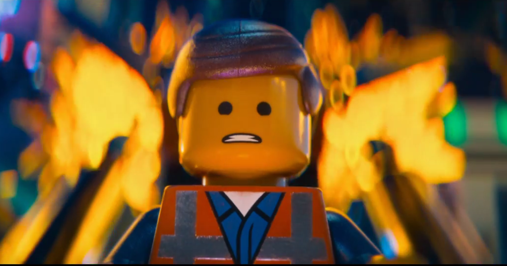
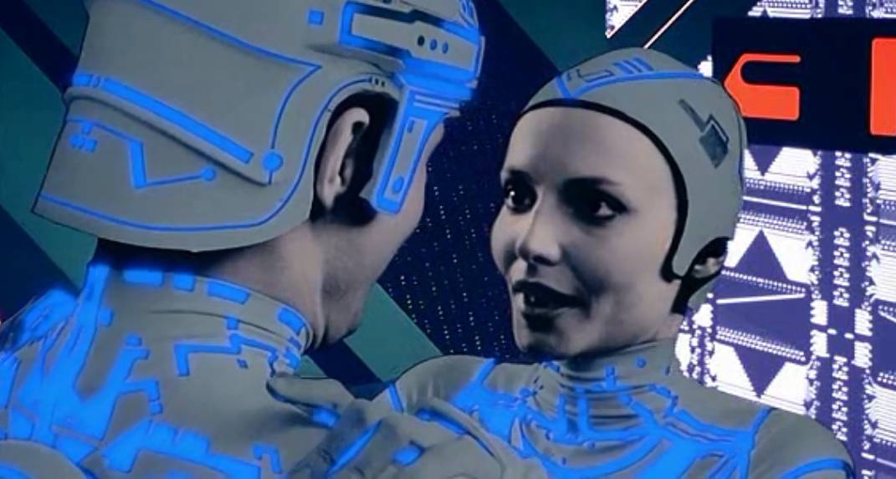
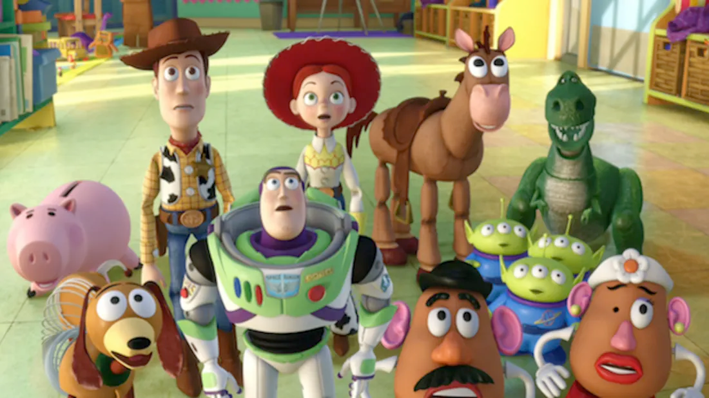

CGI film
- A CGI (ejtsd cégéi, angolul: szídzsíáj), teljes nevén Computer-Generated Imagery, magyarul „számítógépen létrehozott kép”, a film és egyéb vizuális média készítése során alkalmazott számítógépes grafika elterjedt elnevezése, amely általában 3D-s számítógépes grafikát takar. Használatos még a CG (Computer Graphics) rövidítés is, illetve digitális animáció (digital animation), komputer animáció (computer animation), digitális filmtrükk / effekt (digital (visual) effects) neveken is említik. CGI-t használnak filmekben, televíziós sorozatokban, tévéműsorokban, reklámokban és nyomtatott médiában is. A CGI-vel készült mozgóképet motion graphics néven is ismerik.
- A videojátékok leggyakrabban real-time számítógépes grafikát (ritkán referálják CGI-ként) használnak, de esetenként tartalmaznak előrenderelt „vágott jeleneteket”, illetve intrófilmeket, melyek tipikusan CGI-alkalmazások. Ezekre FMV-ként utalnak (Full Motion Video).
- Filmkészítés során filmtrükköt igénylő jelenetekhez azért használják egyre gyakrabban a digitális technikát, így a CGI nyújtotta lehetőségeket, mert sokszor magasabb minőséget eredményez, s jóval tudatosabban irányítható, mint más, inkább gyakorlati alapú módszerek, úgymint miniatűrök megalkotása, vagy statiszták alkalmazása tömegjelenetekhez, illetve mert olyan képek kidolgozására is alkalmas, melyeket semmilyen más technológiával nem lehetséges létrehozni. Továbbá lehetővé teszi egy művésznek, hogy színész, költséges díszletek vagy kellékek nélkül dolgozzon.
- Az utóbbi időkben a CGI-szoftverek és a megemelkedett számítógép-sebességek elérhetővé tették az egyéni művészek és kisebb társaságok számára, hogy professzionális vizsgafilmeket, játékokat, vagy szépművészeti alkotásokat készítsenek otthoni számítógépeiken. Mindez egy internetes szubkultúra kialakulását eredményezte, melynek megvannak a saját globális ünnepeltjei, bevett sablonjai és szakszavai.
Az 5 legkirályabb CGI-világ a filmvászonról
Az elmúlt 35 év alatt az egyik legizgalmasabb szakma lett a számítógépes grafika, a fejlődés eredményeit pedig talán a mozirajongók élvezhetik ki leginkább. Például egész világokat lehet vászonra álmodni - a semmiből.
Akár hiszed, akár nem, egy iPhone-nak kb. 500-szor nagyobb a teljesítménye, mint azoknak a gépeknek, amelyekkel az 1982-es Tront készítették. Ez azért meredek. A nagyívű technológiai fejlődést a filmvilág azóta is örömmel aknázza ki, a nézőknek pedig ma már annyira természetes a kompjuteranimáció használata, hogy fel se kapják rá a fejüket. Eközben a gyártók meg egyre feljebb és feljebb emelik a lécet, hogy átüssék a nézői ingerküszöböt. Íme öt film, amelyek a legvalóságosabban és a legizgalmasabban hoztak létre teljes világokat részben vagy teljesen CGI (computer generated image, azaz számítógéppel létrehozott képek) segítségével.
1. A Lego-kaland (2014)
Paolo Plaisted, az Animal Logic operatőre azt mondta a Lego-film kapcsán: „Azt akartuk, hogy az emberek elhiggyék: amit látnak, az a valóság. Ezért sokat utána kellett járnunk, mitől néz ki a stop motion annyira valóságosnak.” Sikerült is nekik, de a csapatnak sokat kellett tanulmányoznia a stop motion vizuális nyelvét, hogy aztán a számítógépes grafikába tudják ágyazni. A tény pedig, hogy mégis csak Legoról volt szó, még inkább felszabadította a kreativitásukat: „A Lego annyira kreatív dolog, rengeteg mindent tudsz csinálni vele” – mondta Aidan Sarsfield
2. Tron (1980)
Lehetetlen a CGI-ról beszélni a Tron említése nélkül. A Tron ötlete 1976-ban pattant ki Steven Lisberger animációs szakember, producer és rendező fejéből (a szót az „electronic”-ból vette). Miután látta, milyen látvány hozható létre a videójátékokban, elkezdett egy filmen ötletelni, amelyben elektronikus harcosok szerepelnek. Hamar rá is jött, hogy ez nem lesz túl olcsó mulatság, anyagi forrásokat próbált keresni – a gyártásvezető csapat el is érte, hogy a Disney finanszírozza a munkálatokat. Pedig mai szemmel nem volt túl nagy technikai igénye a produkciónak: a számítógépek, amelyekkel készítették, 2 MB memóriával és 330 MB tárhellyel rendelkeztek.
3. Toy Story (1995)
A filmben annyi úttörő vizuális effektet használtak a készítők, hogy azt felsorolni is nehéz lenne. De ami a legnagyobb dobás volt, az Andy rendkívüli részletességgel ábrázolt szobája. Az egész mozit több mint két éven keresztül csinálták: több mint 70 karakter szerepel benne és 1700-nál is több felvételt készítettek. Tom Porter munkája akkor nem hozta meg a megérdemelt elismerést, de ő ezt mondta: „Nem vagyok egy optimista természetű ember. De erre most nagyon büszke vagyok.”
4. A gyűrűk ura
Az egész filmtrilógia előtt le a kalappal, de ami a legjobban sikerült, az Középfölde ábrázolása. Peter Jackson elképzelése róla ráadásul messze meghaladta az akkor rendelkezésre álló technika által létrehozható CGI-világot. A vizuális effektusok supervisora, Jim Rygiel azt mondta: „miniatűröket, pirotechnikát, bluescreent, CG-elemeket használtunk az összes lehetséges variációban.” Ellen M. Somers, az egyik producer szerint nincs is olyan technika, amit kihagytak volna. „Általában 4-5 technikát alkalmaznak egy filmnél, legfeljebb 6-7-et. Mi 27-et használtunk.”

5. Avatar (2009)
Nos, igen, az Avatarral kétség kívül új korszak kezdődött a filmtörténelemben. Soha előtte nem ábrázoltak ilyen hitelesen csak a CGI segítségével egy nem létező ökoszisztémát, mint a Pandorát, amelyet James Cameron víziója alapján a Weta Digital hozott létre. És tényleg gyönyörű lett Pandora elképesztően részletgazdag világító erdeje a millió hemzsegő élőlénnyel, amelyet majdnem 2000 felvételből raktak össze.
(mozi.24.hu/hirek/20140423/az-5-legkiralyabb-cgi-vilag-a-filmvaszonrol)
A CGI története |
||
|---|---|---|
| 1973 | Feltámad a vadnyugat (2D) | |
| 1976 | Futureworld (már 3D) | kezet és arcot alkotott Edwin Catmull és Fred Parke |
| 1977 | Csillagok háborúja | a Halálcsillag tervrajzai |
| 1982 | Tron | |
| 1984 | Az utolsó csillagharcos | |
| 1985 | Sherlock Holmes és a félelem piramisa | az első igazi CGI-szereplőt alkotta meg John Lasseter |
| 1989 | A mélység titka | fotorealisztikus CGI elnyerte a legjobb vizuális effektekért járó Oscar-díjat |
| 1991 | Terminátor 2: Az ítélet napja | a T-1000-es terminátor folyékony fém-mivolta és alakváltó effektusai Oscar-díj a különleges hatásokért |
| 1993 | Jurassic Park | a dinoszauruszok életszerű megjelenése hibátlanul ötvözte a CGI-t és a live-actiont Hollywood áttér a stop-motion animációról és hagyományos optikai effektusokról a digitális technikákra |
| 1994 | Forrest Gump | Gary Sinise színész lábainak digitális módon történő eltávolítása, a napalmtámadás, a gyorsan mozgó pingponglabdák és a madártoll a nyitójelenetben |
| 1995 | Toy Story – Játékháború | az első teljes egészében számítógép alkotta mozifilm további animációs cégek jöttek létre |
| 2000-es évek eleje | a számítógép generálta ábrázolás vált az uralkodó effektussá, lehetővé vált a virtuális kaszkadőrök alkalmazása, számítógép alkotta statisztákat is kiterjedten alkalmaztak tömegjeleneteknél, továbbfejlesztett csoport- és tömegszimulációs szoftverrel |